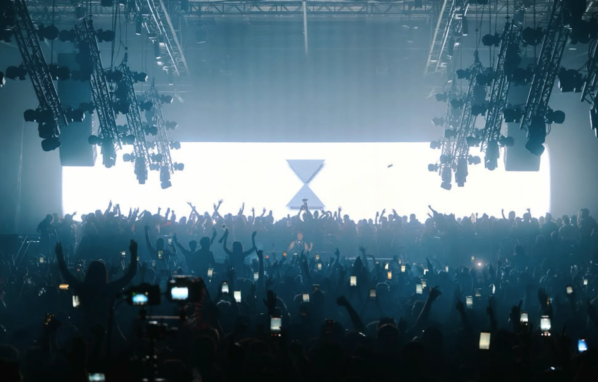
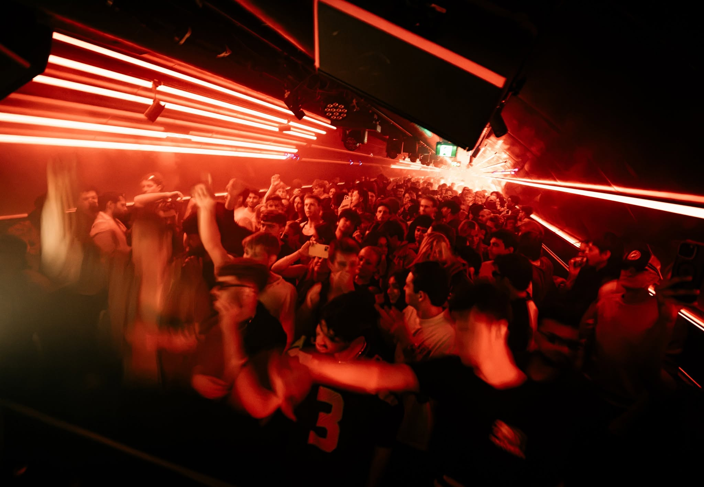
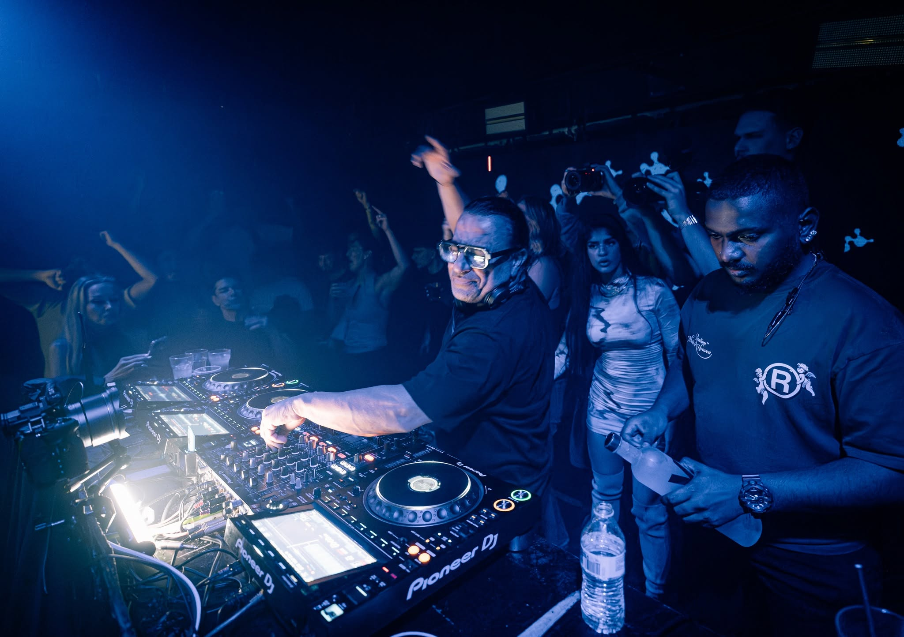
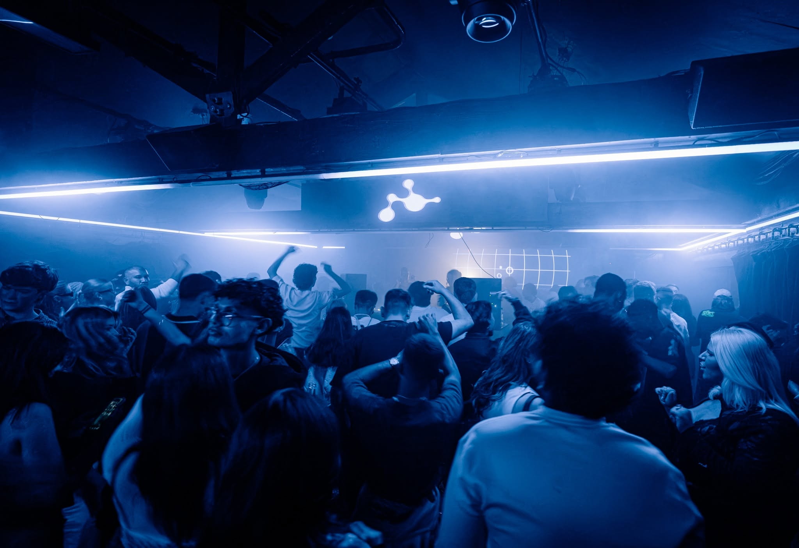
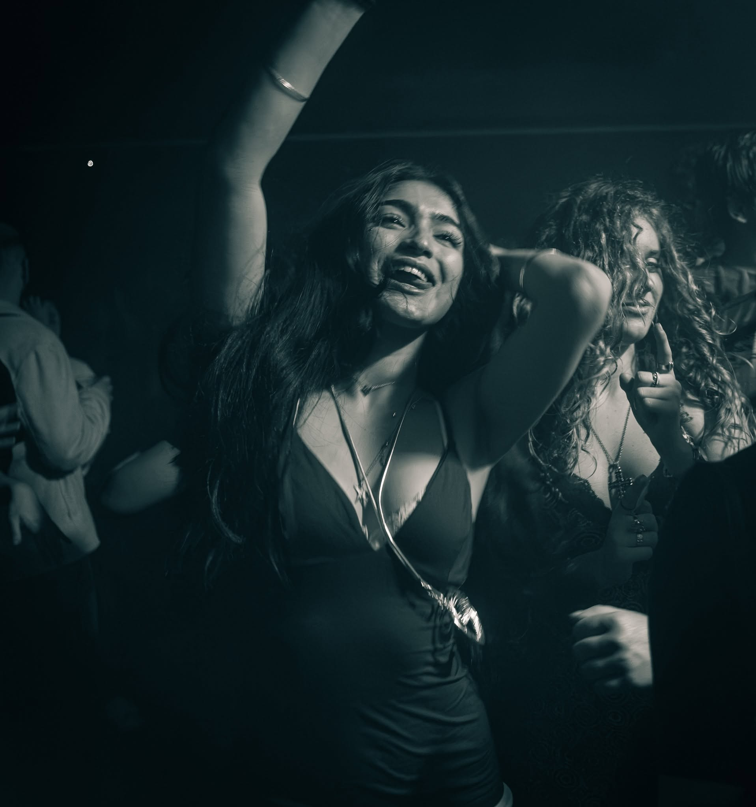
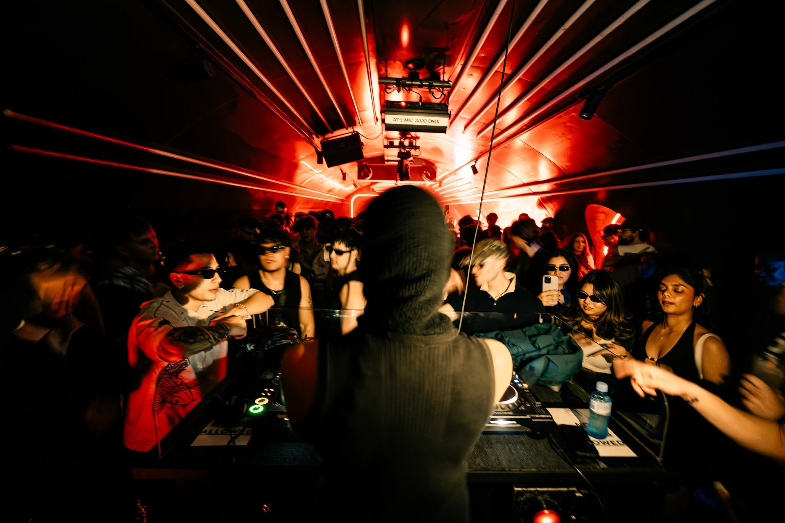
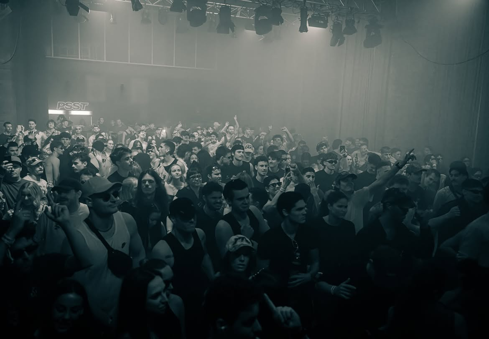

Ashby Projects — Independent events & culture
EVENTS. TOURING. TALENT.A modern music & events enterprise.
↓Independent &
Melbourne made
Ashby Projects is a grassroots events company creating the brands, platforms, and partnerships that amplify live music.
Our house includes Nerve and Stamina, two of Melbourne’s most influential club brands, alongside large-scale events and festival programmes led by artists at the helm of their genre.
MORE ABOUT ASHBY ↗Next up.
ALL TICKETS ↗Club spaces.
Explore our portfolio of club brands – playing techno, house and contemporary electronic music.
Melbourne's home for hard techno and heavy, high-energy lineups. Built to take the night past sunrise.
EXPLORE STAMINA ↗A Melbourne collective built around raw, underground sound, local residents and unexpected guests.
EXPLORE NERVE ↗
Stamina was engineered for the Melbourne community that lives for harder sounds. It’s a space dedicated to industrial-strength hard techno, hard bounce, and the faster edges of the 4/4 spectrum.
Located beneath Flinders Street in the historic Banana Alley Vaults, Stamina’s home is part of Melbourne’s own history. The century-old brickwork holds the marks of another era, now reimagined as a modern rave environment where industrial character meets festival-grade production.
Nerve is a weekly refuge built on pioneering styles and open-floor connection. Fueled by the latest in contemporary techno and a devotion to the underground, Nerve amplifies breakout artists and welcomes everyone to shape the future of dance.
With a commitment to platforming both emerging and elite talent, Nerve has hosted major acts like 999999999, Ben Klock, Azyr, Nico Moreno, Somewhen, Anetha, DJ Gigola and Tommy Holohan, alongside local heroes and genre-defining new voices. Official Teletech AU afterparties and exclusive bookings put Nerve at the forefront of the Australian and international circuit.
Gallery picks.
Fridays at Nerve. Saturdays at Stamina.




Now touring.
Meet the Ashby Projects touring artists.
TOURING & BOOKINGS
MATTHEW@ASHBYPROJECTS.COM.AU ↗
Our talent.
Brianna Baxter, Panic and Four To Eight. Select an artist to learn more.

About
Ashby.
Founded in 2023 by three promoters with a shared passion for music and culture, Ashby Projects has grown into a multidisciplinary team of creatives, music and industry professionals, delivering forward-thinking live experiences to over 100,000 patrons annually.
With deep roots in Melbourne’s underground, Ashby’s reach now extends well beyond the city. Through its artist management arm, Nerve Agency, the team has developed emerging talent and taken Australian artists on tours across Europe and Asia. Closer to home, Ashby brings some of the world’s leading electronic artists to Australian dancefloors, with new tours and collaborations always at work.